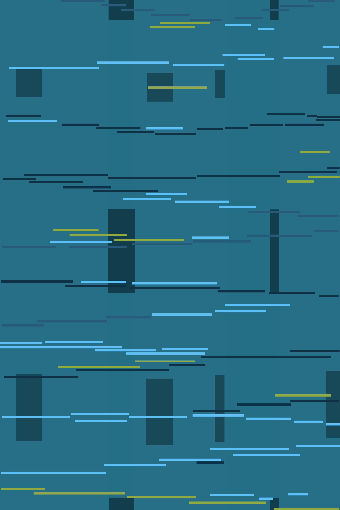
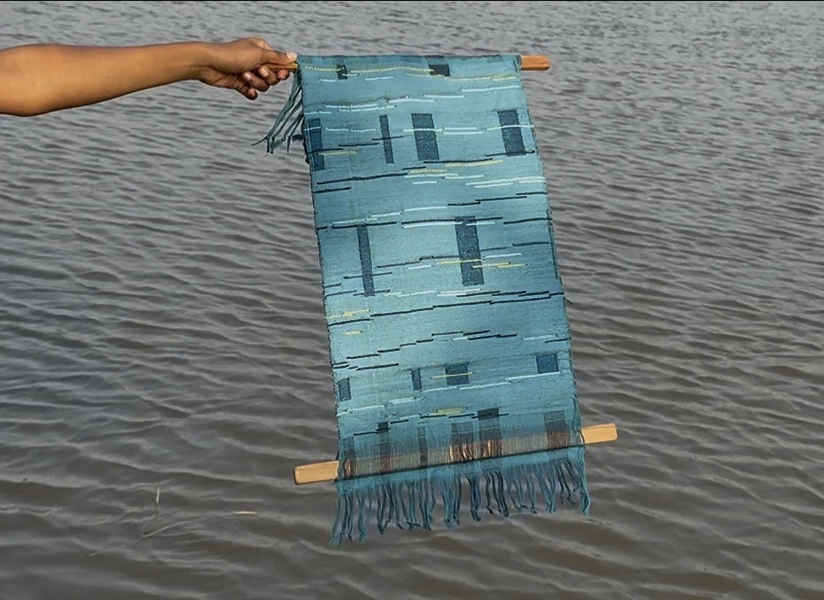
Woven
ADVANCED WEAVING
This project was an exploration of advanced weaving techniques, pushing beyond the basics to understand the more complex and technical possibilities of the loom. The inspiration was drawn from the blue damselfly — a continuation of the same concept developed during the Fabric Construction course, where the iridescent and delicate nature of the damselfly served as the creative foundation.
Inspiration
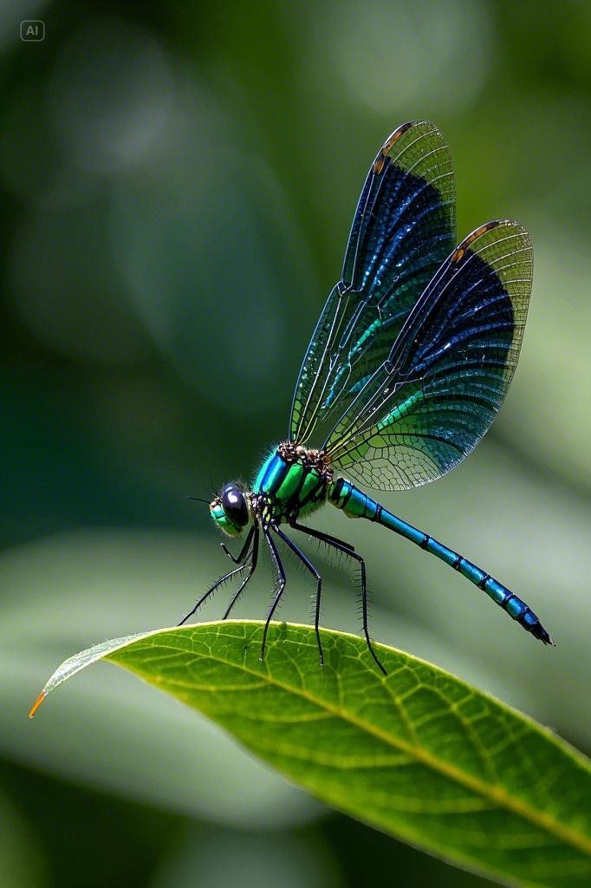
Brief
The process began with developing a hand sketch of the concept, followed by creating a digital version of the same, which was then translated into a final woven sample. This structured approach helped bridge the gap between visual ideation and technical execution — from a sketch on paper to a woven fabric.

Technique
The final sample was executed using the wadded double cloth weaving technique, which adds depth and dimension to the fabric. To capture the signature shimmer and iridescence of the damselfly, zari threads were incorporated into the weave — lending the fabric a glittering, luminous quality that directly references the visual character of the blue damselfly.
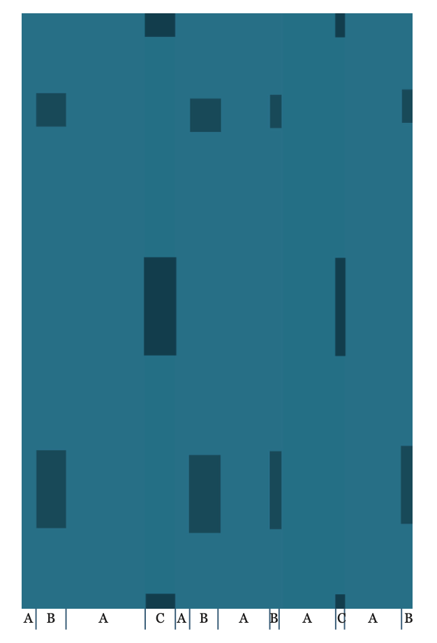
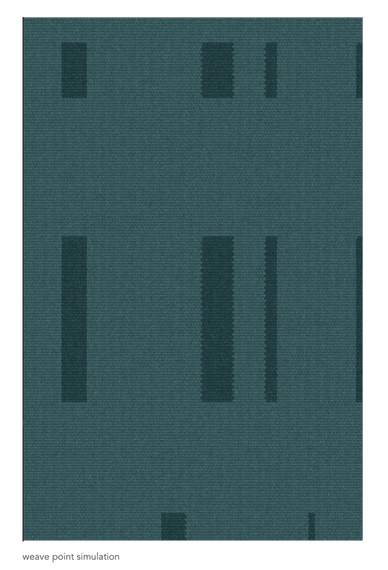
Reflection
This project was a technical and demanding progression from the Fabric Construction course — revisiting the same inspiration through a more advanced lens deepened the understanding of how a concept can be pushed further through complex weaving structures.
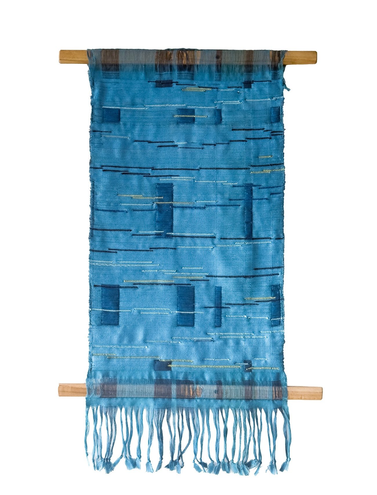
Woven Samples
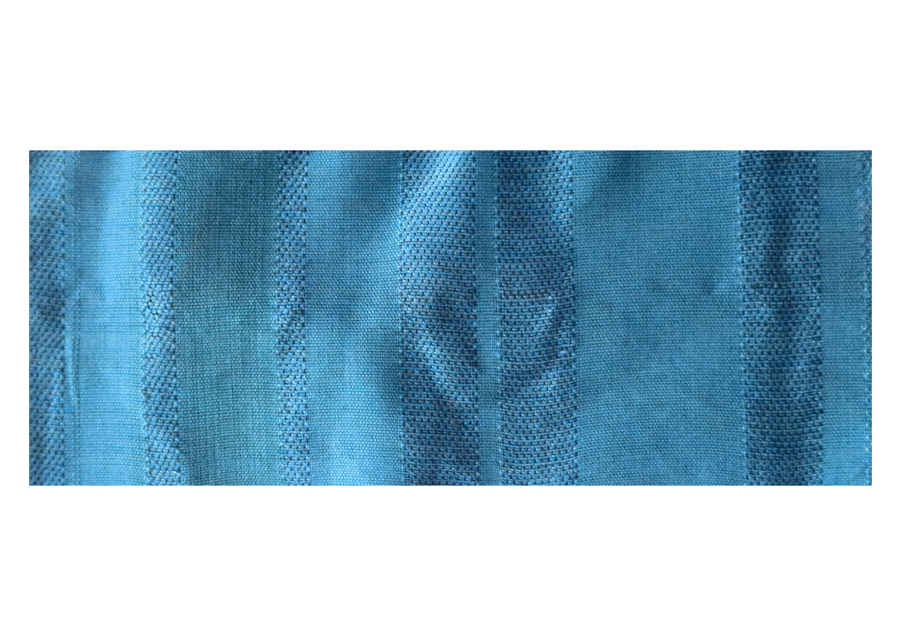
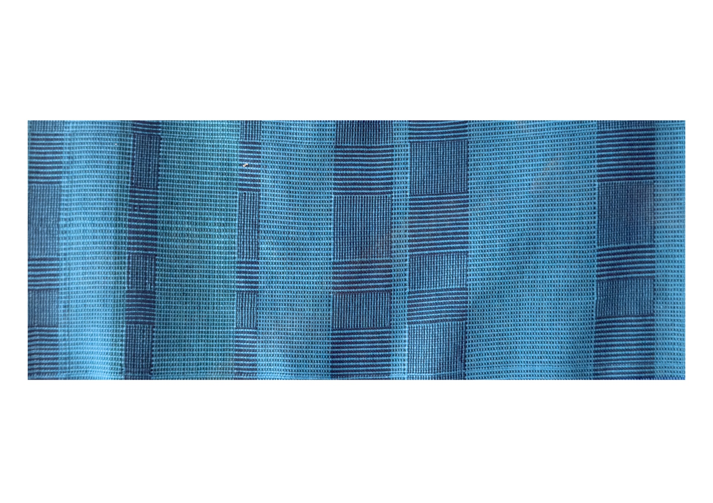
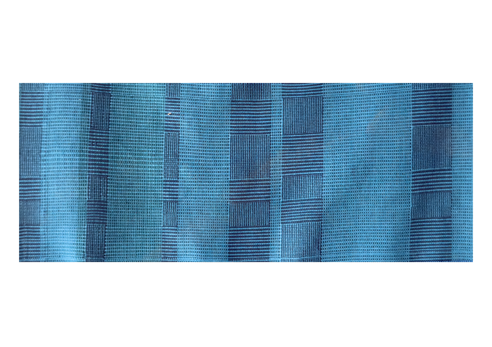
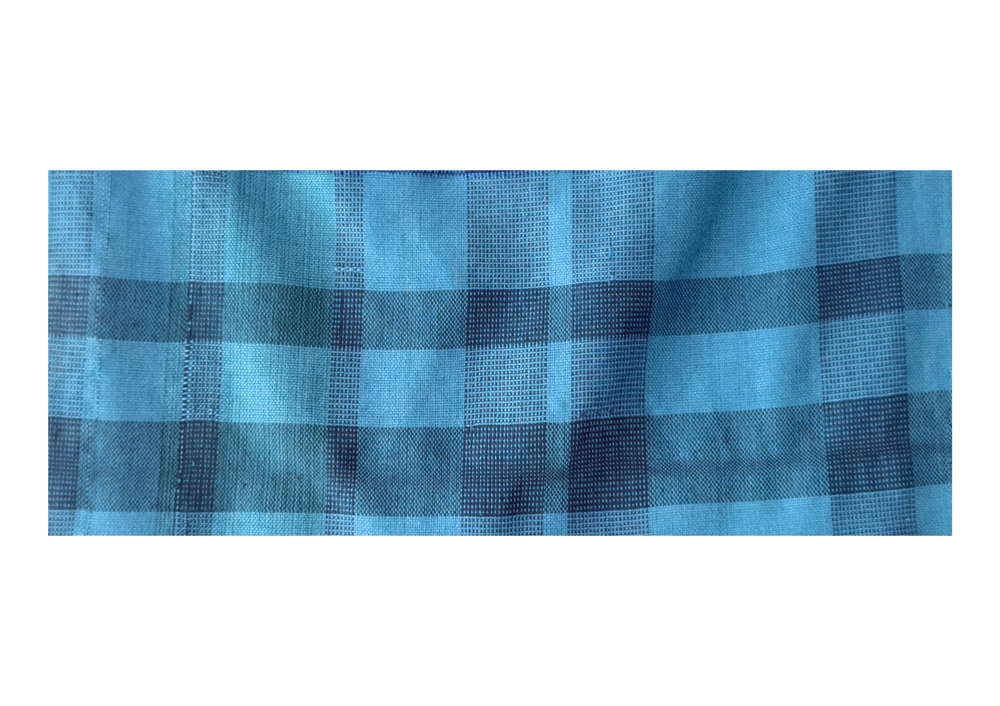

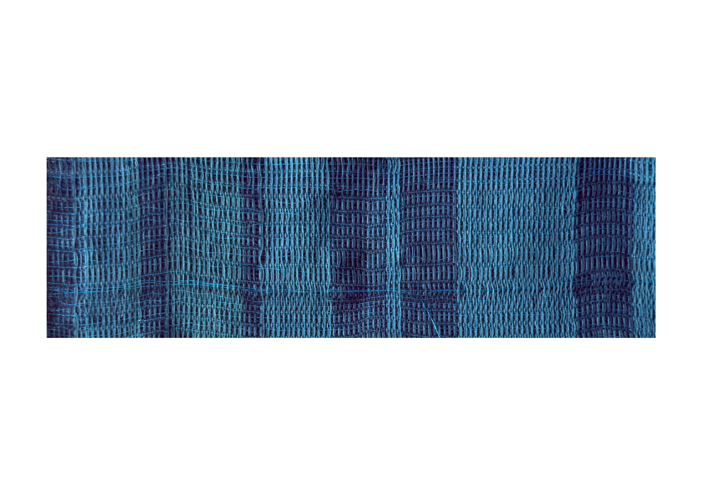
Process
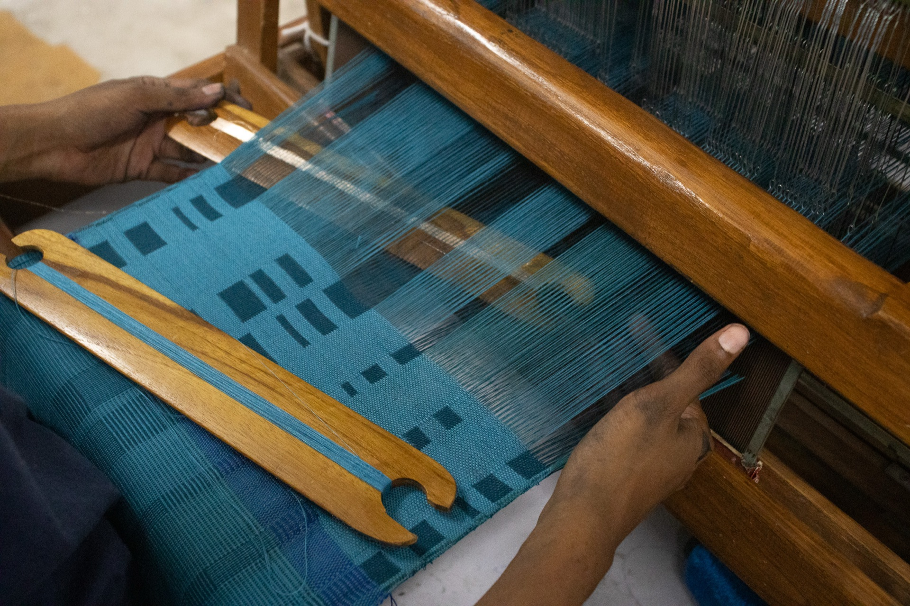